Un guante que convierte señas en voz, en tiempo real.
SIGNATEC es un guante traductor de Lengua de Señas Argentina: interpreta la configuración y el movimiento de la mano y los transforma en palabras habladas, para acercar a personas sordas y oyentes en una conversación cotidiana.
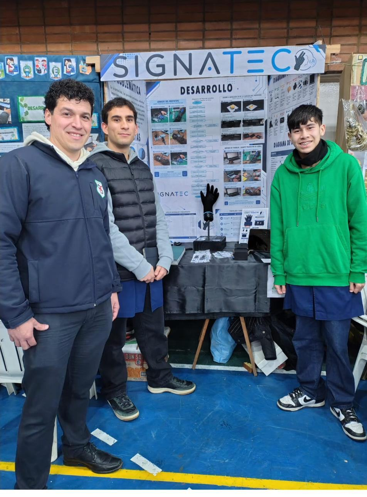
La barrera no está en la señas, está en quien no las entiende
Hoy, las personas sordomudas enfrentan barreras importantes para comunicarse con quienes no conocen la lengua de señas. Eso complica el acceso a la salud, la educación, el transporte público y los comercios de todos los días.
SIGNATEC no reemplaza el aprendizaje de la LSA: funciona como puente inmediato en el momento en que esa barrera aparece, dando voz a la seña en el instante en que se hace.
"SIGNATEC no es solo un guante traductor; es un puente tecnológico diseñado para que la comunicación sea un derecho equitativo para todos."
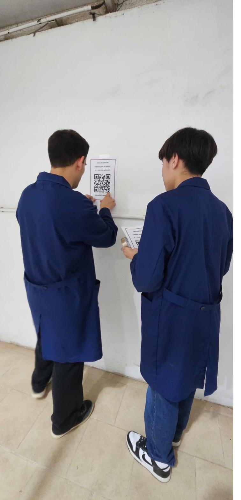
El diseño arrancó preguntando, no soldando
Antes de tocar un cable, el equipo salió a encuestar tanto a personas oyentes como a personas con discapacidad del habla, para entender dónde se sentía más la barrera de comunicación. Esos resultados —el 93%, el 97%, el 79%— son los que terminaron definiendo qué tenía que resolver SIGNATEC.
De la seña a la palabra, en cuatro pasos
Cada dedo y cada giro de la mano se convierten en una señal eléctrica que el microcontrolador interpreta y traduce.
Los sensores flex leen la posición de los dedos
Una tira sensora en cada dedo del guante cambia su resistencia según el grado de flexión, generando una lectura distinta para cada configuración de mano.
El MPU6050 capta el movimiento y la orientación
El giroscopio y acelerómetro detectan hacia dónde y cómo se mueve la mano, un parámetro clave para diferenciar señas que se parecen en la forma pero no en el gesto.
El ESP32 procesa e interpreta la combinación
El microcontrolador recibe todas las señales, las compara con los patrones fonológicos de la LSA cargados en el sistema y determina qué palabra corresponde.
El resultado se escucha y se muestra
La palabra interpretada se reproduce por voz a través del módulo de audio y, al mismo tiempo, se muestra en una pantalla OLED para quienes prefieren leerla.
De la primera carcasa a la impresión 3D definitiva
El primer prototipo llevaba la electrónica en una caja de muñeca improvisada. Con las devoluciones de la feria distrital, el equipo la rediseñó por completo e imprimió una nueva versión en 3D.
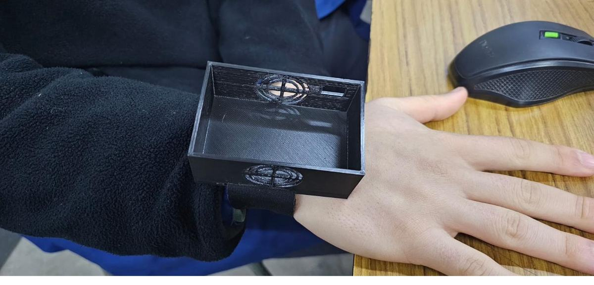
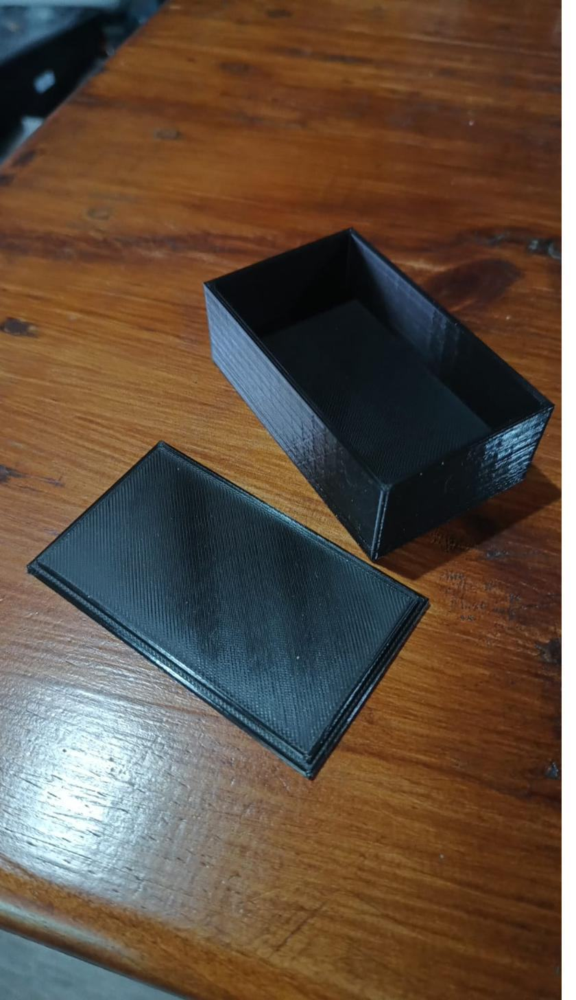
Construido a mano, cable por cable
Cada prototipo pasó por soldadura, cableado y pruebas repetidas antes de convertirse en un guante funcional.
Electrónica y componentes
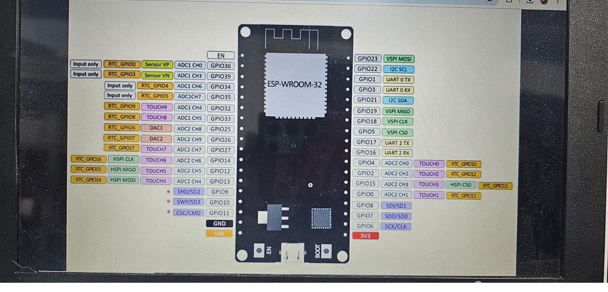
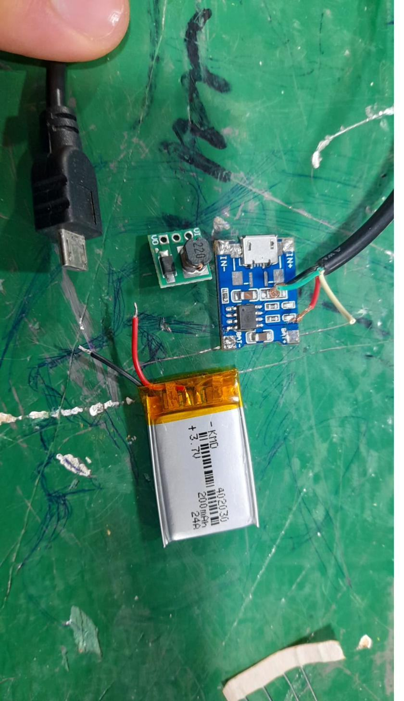
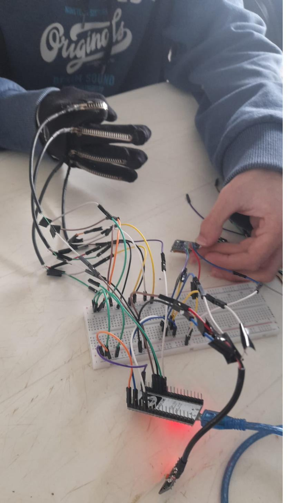
Armado y soldadura
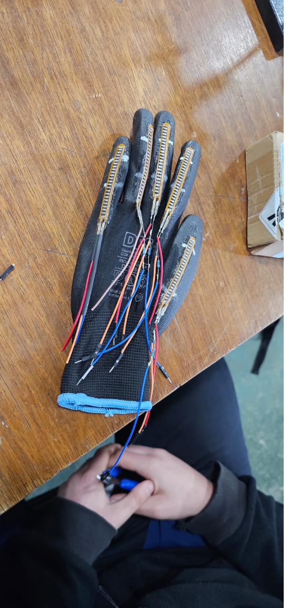
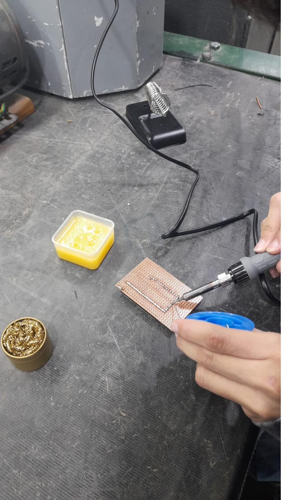
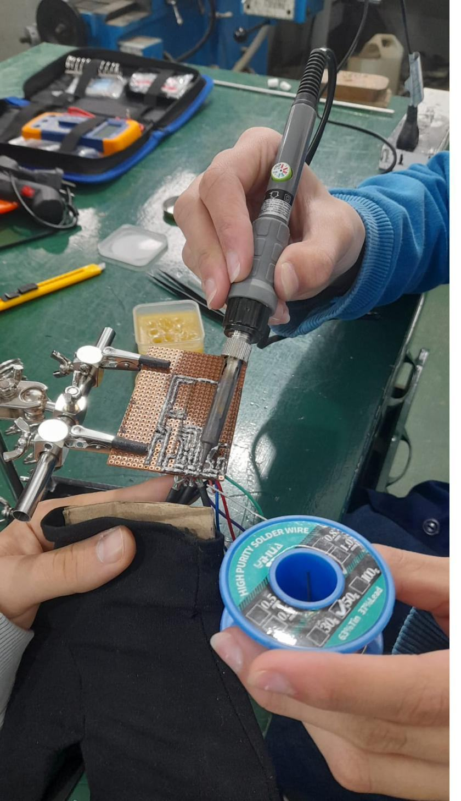
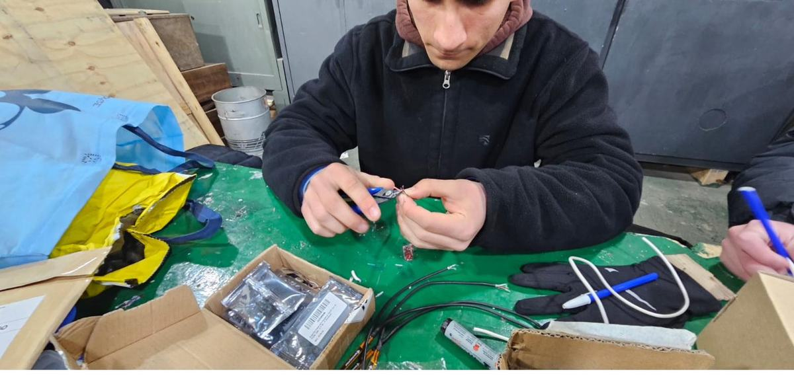
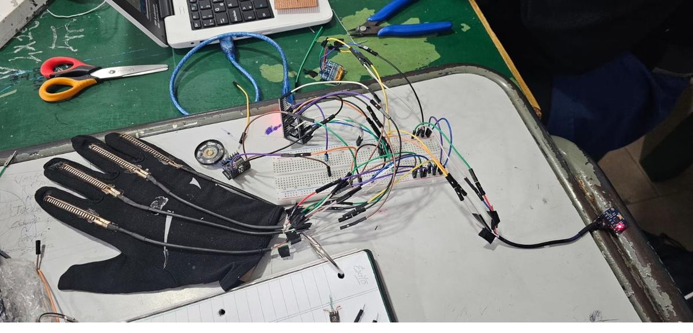
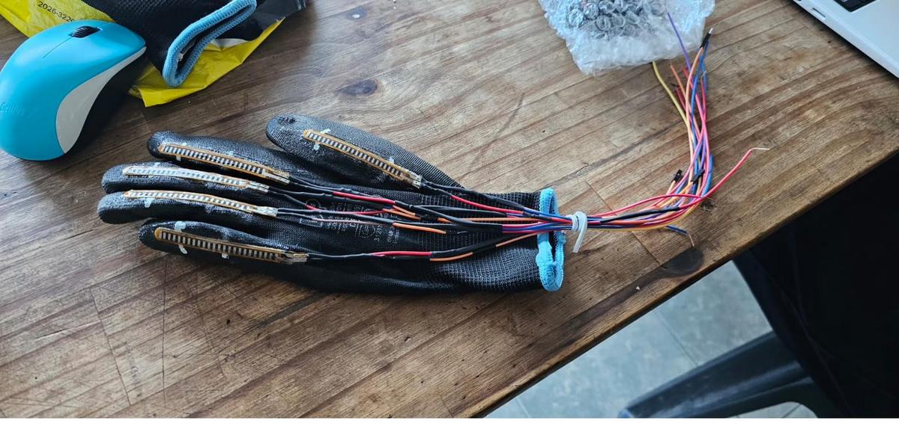
Programación y pruebas
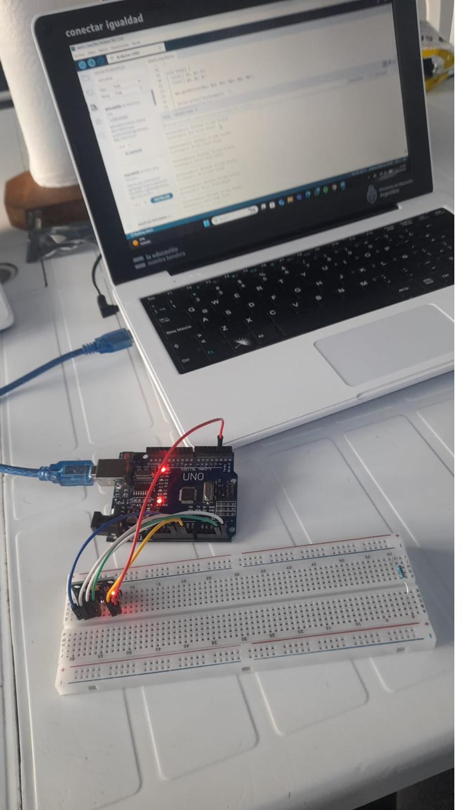
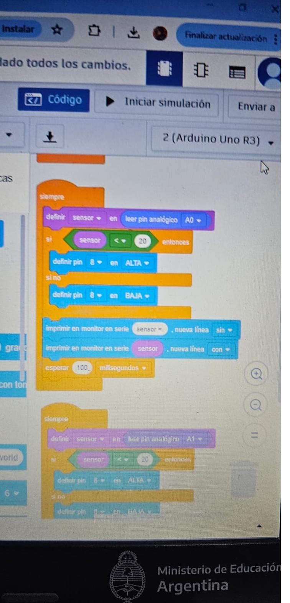
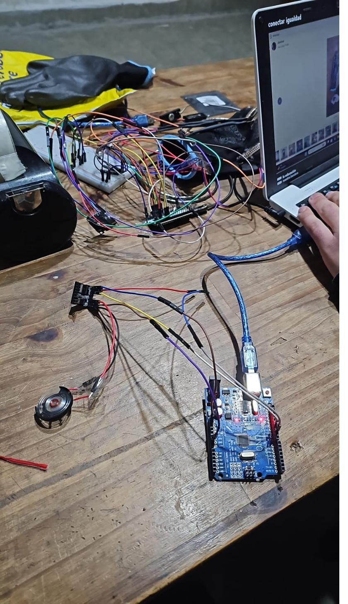
Prototipo final
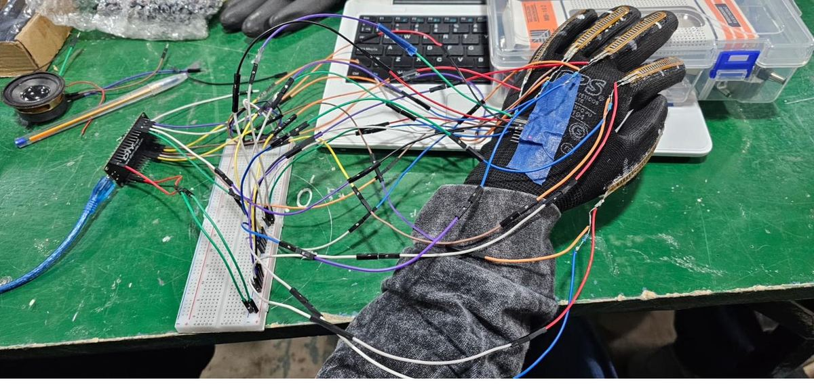
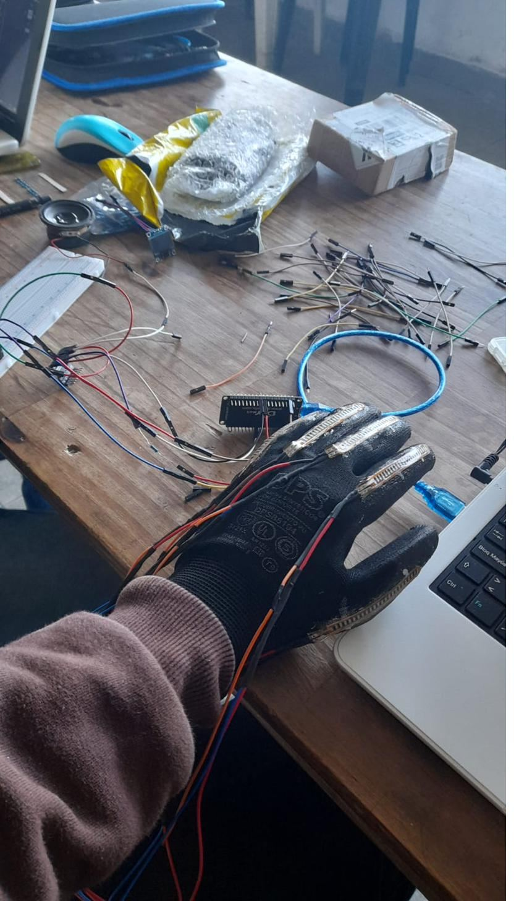
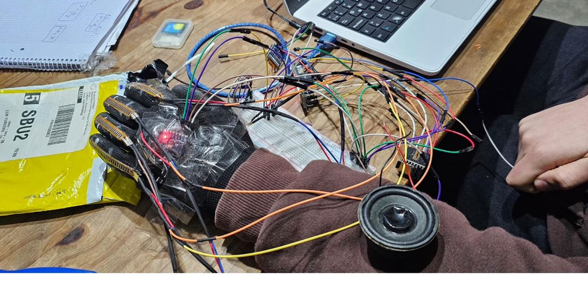
20 semanas, 29 actividades
Del diagnóstico inicial a la instancia provincial, así se organizó el equipo de abril a agosto.
de las personas encuestadas considera que este guante es una herramienta útil para la inclusión social.
- Transporte público y comercios. Los espacios donde más se necesita una traducción inmediata, según la propia encuesta de campo.
- Validación con datos reales. El diseño surgió de encuestar a oyentes y personas con discapacidad del habla, no solo de una idea técnica.
- Rigurosidad técnica. Integración de ESP32, sensores flex y MPU6050 para interpretar los parámetros fonológicos de la LSA: configuración y movimiento.
Lo que sigue para SIGNATEC
Más combinaciones
Sumar nuevas combinaciones de sensores para lograr traducir más palabras.
Batería recargable
Incorporar una batería recargable sin necesidad de desconectar el guante para cargarla.
Diseño compacto
Lograr un diseño más compacto, con la electrónica integrada al guante en lugar de externa.
Guante de neopreno
Rediseñar el guante en neopreno para lograr una mejor adhesión a la mano.
¿Querés conocer el prototipo en persona?
Escribinos si sos parte del jurado de la feria, de una institución o simplemente querés saber más sobre el proyecto SIGNATEC.